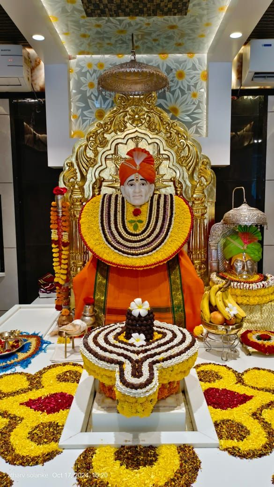

I am an Artificial Intelligence undergraduate passionate about building intelligent systems and solving real-world problems through data and technology. I enjoy working with Machine Learning, Generative AI, Data Science, and Software Development, turning complex conceptual ideas into practical, impactful solutions.
Core Engineering Intersections:
Completed an engineering track executing automated data operations with outstanding remarks. Authored robust modular functional script patterns, handled algorithm scaling, debugged software errors, and deployed standalone system components across projects.
Spearheaded strategic outreach initiatives within the social awareness wing to drive target community alignment. Monitored content distribution workflows, paired with structural project groups, and evaluated traction indicators to optimize campaign performance.
Designed and built an interactive conversational agent leveraging standard Python Natural Language Processing (NLP) libraries for local query management.
Constructed an analytical classification engine utilizing Scikit-Learn pipelines to isolate and tag malicious vectors within unstructured datasets.
IBM | Coursera
Coursera Project Network
Infosys Springboard
Infosys Springboard
JD College of Engineering and Management
Looking for a specialized engineer to deploy machine learning models, build generative AI applications, or optimize robust backend systems? Let's connect and build something intelligent together.